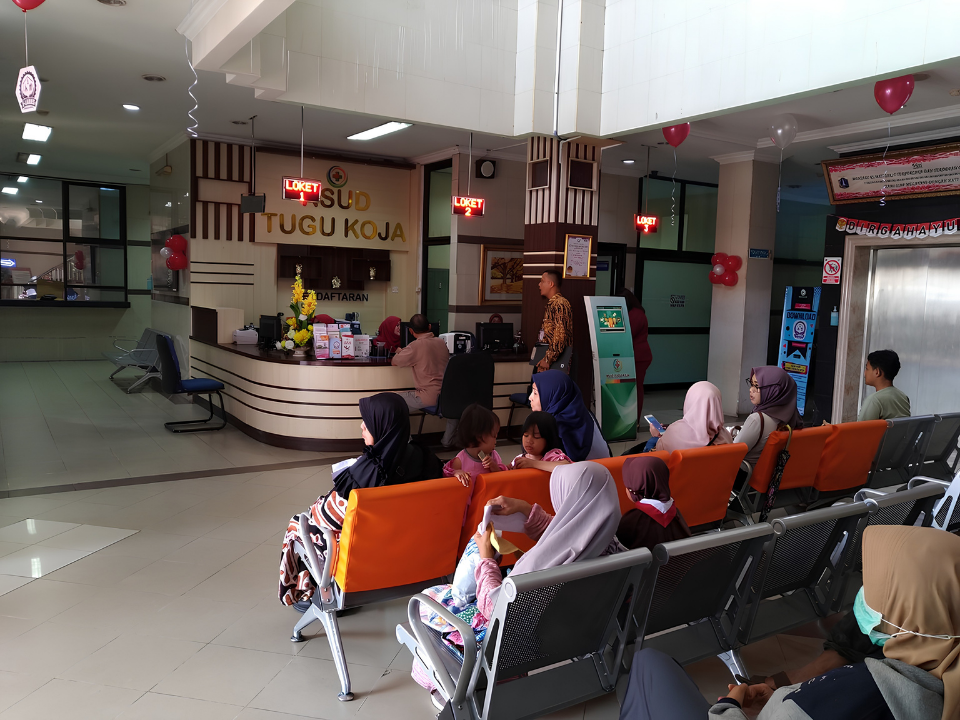
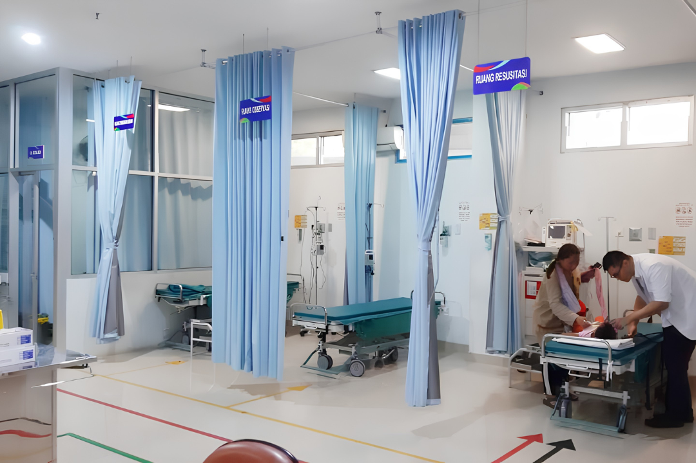
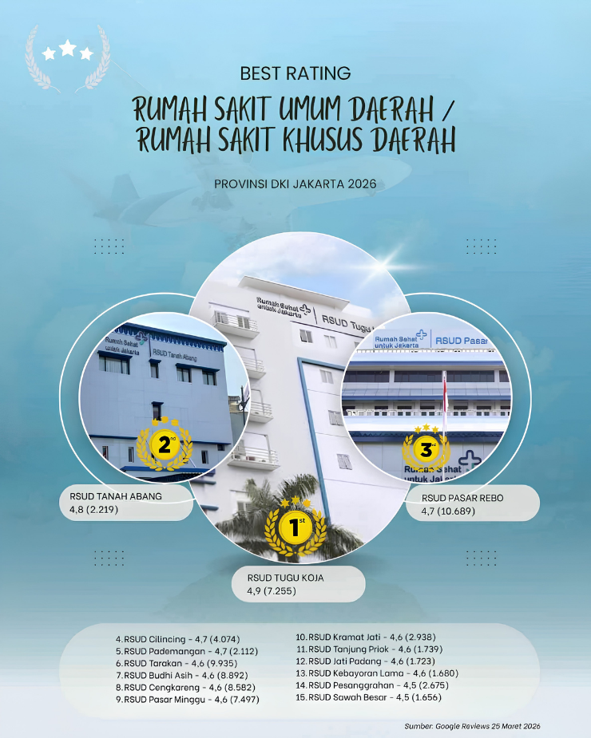

Transformasi Menuju
Rumah Sehat untuk Jakarta
Memberikan pelayanan kesehatan prima dan profesional dengan sentuhan humanist untuk seluruh masyarakat Jakarta Utara.
Jadwal Dokter
Lihat ketersediaan dokter spesialis terupdate setiap hari.
Standar Pelayanan
Protokol kesehatan dan pelayanan yang ketat demi menjamin mutu serta efisiensi.
Peta RS
Jelajahi denah dan lokasi fasilitas RSUD Tugu Koja melalui tur virtual interaktif.
Manajemen Integritas
Akses informasi publik, dokumen, dan layanan transparansi RSUD Tugu Koja.
Layanan Kesehatan Unggulan
Kami menyediakan berbagai fasilitas medis modern dengan tenaga ahli yang siap melayani Anda dan keluarga dengan sepenuh hati.

Poliklinik Rawat Jalan
Melayani lebih dari 15 spesialisasi dengan dukungan dokter ahli dan peralatan medis terkini.

Gawat Darurat
Respon cepat dan penanganan medis darurat oleh tim terlatih selama 24 jam penuh setiap hari.

Rawat Inap
Kenyamanan maksimal dengan berbagai kelas kamar yang didesain untuk mempercepat proses penyembuhan.

Rumah Sakit Umum Daerah dengan Rating Terbaik se-DKI Jakarta
RSUD Tugu Koja terus berkomitmen meningkatkan kualitas pelayanan publik. Kepercayaan Anda adalah prioritas utama kami dalam mewujudkan masyarakat Jakarta yang lebih sehat.
Promo Paket Medical Check-Up Spesial HUT Jakarta
Dapatkan diskon hingga 20% untuk paket skrining kesehatan lengkap...
Inovasi Layanan Digital: Antrean Online Berbasis Mobile
Kini pasien tidak perlu lagi menunggu lama di ruang tunggu rumah sakit...